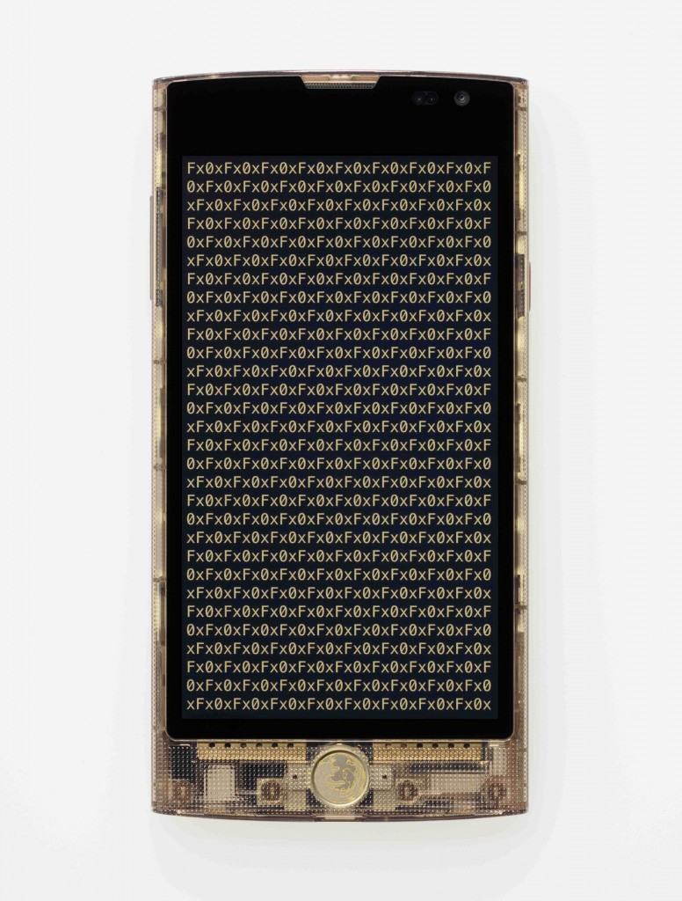

新型態 Firefox OS 行動裝置將具備直覺與簡單易用特性
以捍衛 Web 自由與開放為使命的 Mozilla，今日與 KDDI、LG U+、Telefónica、Verizon Wireless 共同發表聲明，將著手開發新形態 Firefox OS 行動裝置。
Mozilla 與合作夥伴發想此專案的目標，即是要為全球消費者打造更直覺、更簡單易用，且是 Firefox OS 所能提供的絕佳體驗。這些公司通力合作支援 Mozilla 社群，將於 2016 年推出多樣規格的 Firefox OS 新型態行動裝置，從折疊式 (Flips)、滑蓋式 (Sliders)，乃至於直立式 (Slates)，將在功能性手機的既有機制 (撥打電話、文字簡訊)，以及智慧型手機的進階功能 (多樣化 App、相機、影片、內容、瀏覽、音樂播放、電子郵件、網路瀏覽、電子郵件、LTE、VoLTE) 之間取得平衡。
合作夥伴之所以選擇 Firefox OS 作為開發平台，原因即在於 Firefox OS 開放的行動生態系統，能夠兼顧獨立性與開創性。這些特性能讓電信營運商與硬體製造商能夠提供差異化的服務，並開拓新的商機，同時也讓消費者在享受效能、個人化、親民價格的同時，也一併獲得美好、簡潔、易用的經驗。
Mozilla 總裁宮力博士表示：「透過 Firefox OS 與 Web 的力量，我們正重新發想並嘗試為入門級手機提供最新的平台。Mozilla 很高興能與 KDDI、LG U+、Telefonica、Verizon Wireless 等電信廠商夥伴合作，期望能接觸更多新興市場與開發中國家的消費者，並針對不同顧客群提供差異化服務。」
KDDI 產品部門副總裁 Yasuhide Yamamoto 表示：「透過去年 12 月發表 LTE 架構的智慧型手機『Fx0』，我們獲得了更多的市場關注，我們也對 Firefox OS 的無限潛能充滿信心。數十年來，KDDI 一直在日本高度成熟的行動電話市場中保有競爭力，我們相信能與 Mozilla 社群合力開發此新概念的產品。」

Telefónica 集團裝置事業部門 總監 Francisco Montalvo 表示：「Telefónica 一直主動支援 Firefox OS，並與 Mozilla 抱持著『要為客戶提供更多開放選擇』的共識。Firefox OS 智慧型手機現已橫跨我們的事業版圖，於 14 個市場成功上巿，並且持續以親民價位提供穩定且簡潔的使用者經驗，讓越來越多消費者都能享受連網服務。」
Verizon 裝置技術副總裁 Rosemary McNally 也表示：「Verizon 致力為客戶提供創新產品。此一創新專案就是要為入門手機打造前衛、簡易、智慧的平台。我們期待能繼續和 Mozilla 以及其他服務供應商合作，妥善運用 Firefox OS 與 Web 社群的強大力量。」
關於 Mozilla
Mozilla 身為擁護 Web 的先驅已超過 15 年，且致力提倡開放標準，讓 Web 成為眾人所擁有的平台亦不斷與時俱進。目前全球有數億人使用 Mozilla Firefox 在桌機、平板、行動裝置上盡情徜徉 Web。而透過 Firefox OS 與 Firefox Marketplace，Mozilla 也得以主導 Open Web 標準所打造的行動生態系統，並讓行動服務的供應商、開發者、消費者能夠擺脫專利平台的諸多限制，以獲得更高的自由度。
關於 KDDI Corporation
KDDI 為提供實體線路與行動通訊服務的通訊公司，並時時保持多變時局中的競爭力。針對個人消費者，KDDI 即透過品牌名稱「au」，提供行動通訊 (行動電話) 與實體線路通訊 (寬頻網路＼電話) 服務，並協助實現 Fixed Mobile and Broadcasting Convergence (FMBC)。另針對企業客戶，KDDI 則提供完整的資訊與通訊服務，從 Fixed Mobile Convergence (FMC) 網路、資料中心、應用程式，直到安全策略等，均協助強化客戶的業務模式。可至http://www.kddi.com/english 進一步了解。
關於 Telefónica
就市場資本額與客戶數量來看，Telefónica 已屬於全球最大規模的通訊公司之一。透過其最高水準的行動\實體\寬頻網路，以及創新的數位解決方案組合，Telefónica 正將本身轉型為「數位電信公司」，以更妥善滿足消費者需要，創造更高收益成長。此公司已落腳於 21 國，並於全球擁有 3.41 億名客戶。Telefónica 主要營運於歐洲、西班牙、拉丁美洲，也是其成長策略的重點所在。Telefónica 為 100% 上市公司，共有超過 1.5 百萬名直接股東。其股本目前共計 4,657,204,330 普通股，流通於西班牙、倫敦、紐約、利馬 (Lima)、布宜諾斯艾利斯 (Buenos Aires) 等股票市場中。
關於 Verizon Wireless
Verizon Wireless 目前營運美國最大、最穩定的 4G LTE 網路。Verizon Wireless 身為美國最大型的無線公司，共服務 1.08 億零售消費者，包含 1.02 億名後付款 (Postpaid) 客戶。Verizon Wireless 完全由 Verizon Communications Inc. (NYSE, Nasdaq: VZ) 所持有。若要更多資訊，可至 www.verizonwireless.com。若須Verizon Wireless 的最新消息，可至 http://www.verizonwireless.com/news 新聞中心，或透過推特上的http://twitter.com/VZWNews。
更多 Mozilla at MWC 2015 相關訊息
- Mozilla 展區資訊：西班牙巴塞隆納 Fira Gran Via, Hall 3, Stand 3C30
- 了解更多 Mozilla 在 MWC 的內容：https://www.mozilla.org/en-US/mwc/
- 即時 Mozilla 訊息，請參閱美商謀智部落格：http://blog.mozilla.com.tw/main
- 最新 Mozilla 新聞發佈，請參閱美商謀智新聞室：http://blog.mozilla.com.tw/press
原文連結：